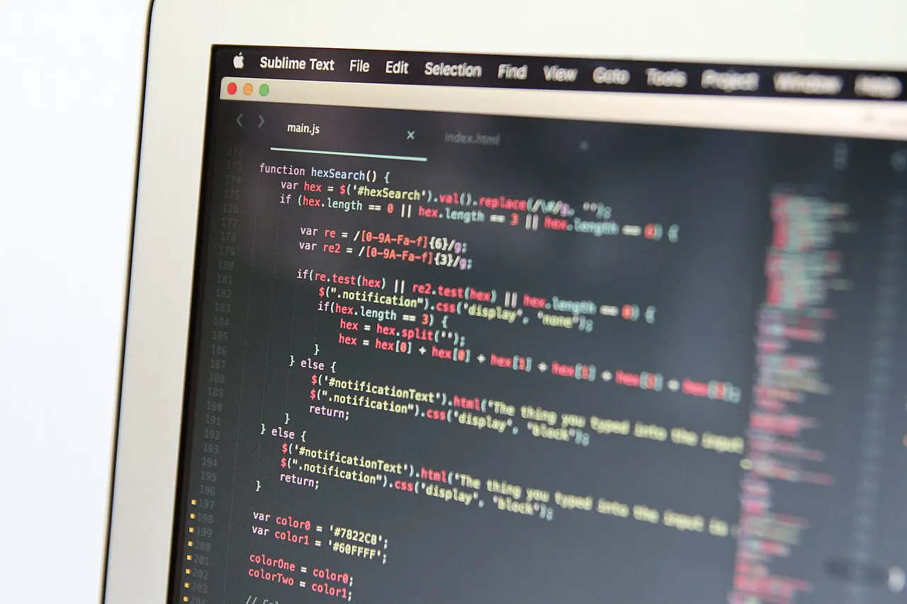
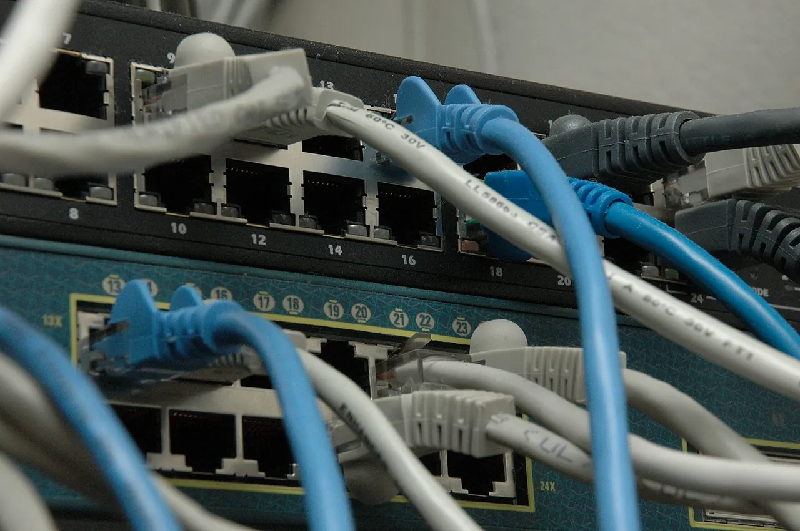
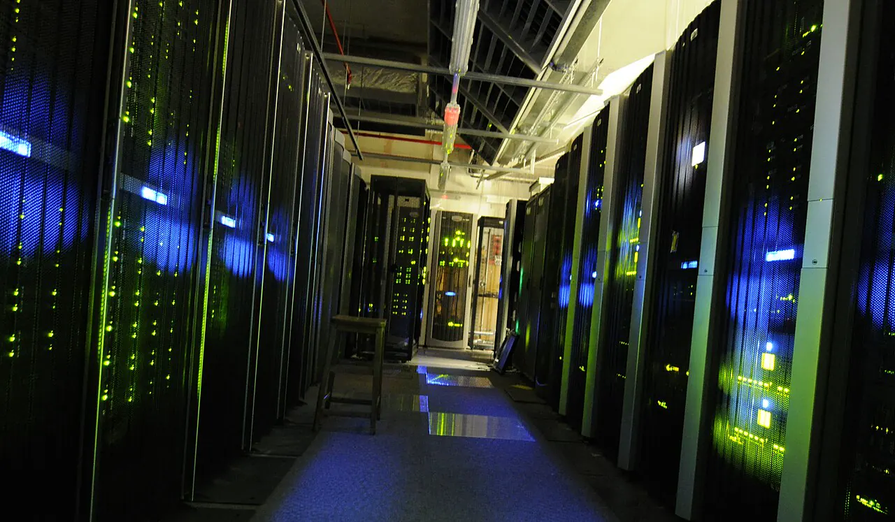
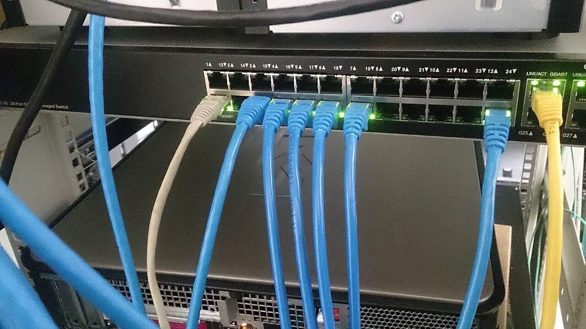
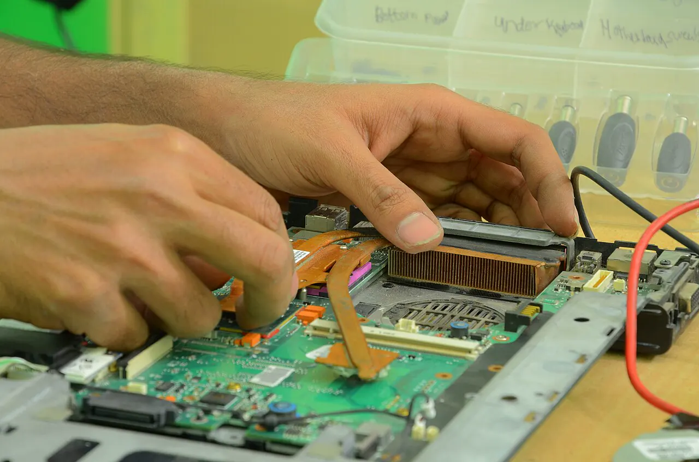
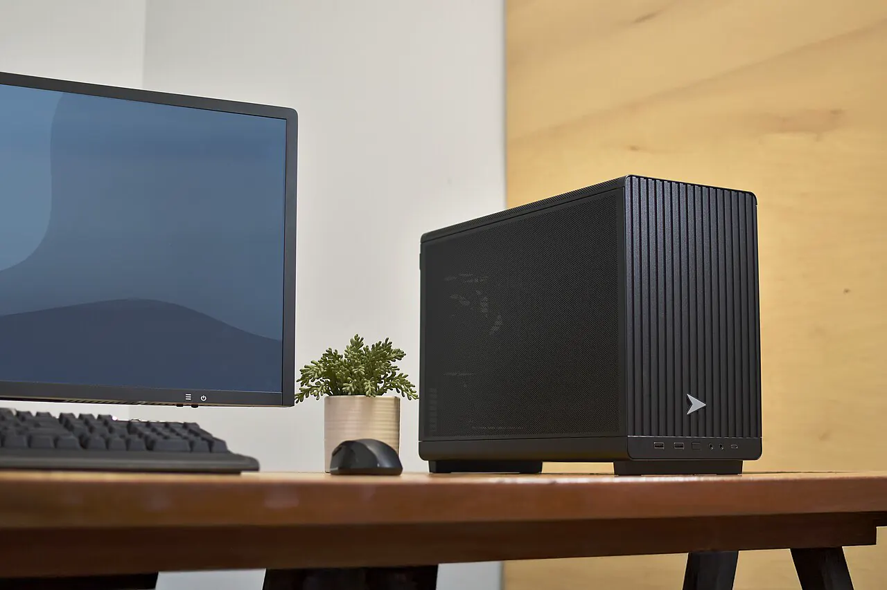
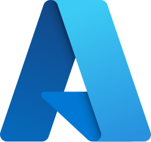
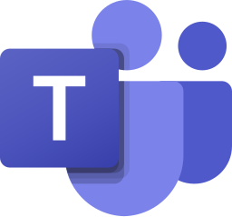
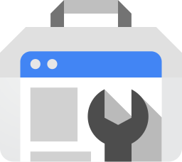
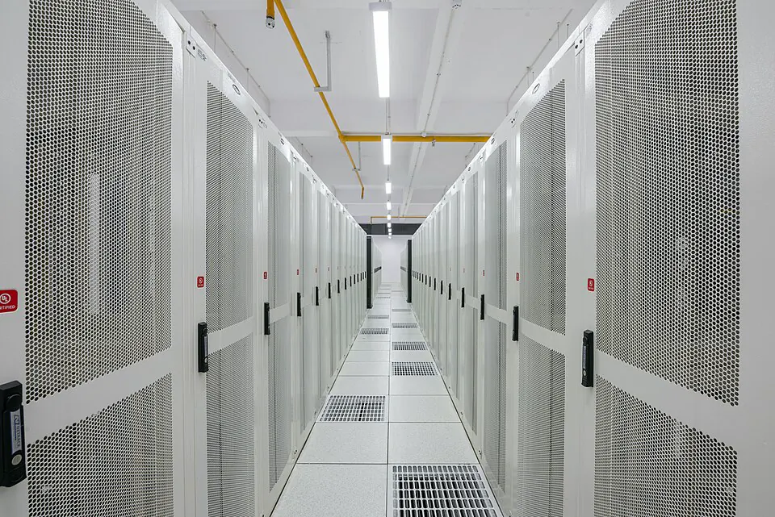

6 hizmet alanı, tek ekip
Logo ve Mikro için özel yazılım danışmanlığı
Logo veya Mikro'da yapamadığınız işleri portal, rapor ve yönetim ekranlarına çeviriyoruz. Donanım, güvenlik ve Microsoft lisanslama da aynı ekipten.
Logo ve Mikro'da yapılamayan işleri yazıyoruz
Ticari yazılımınız yerinde kalır. Eksik kalan işi ona bağlı bir portal olarak geliştiriyoruz.
- Analiz ve yönetim portallarıSatış, stok ve finans verisini tek ekranda izleyin.
- Özel raporlar ve panolarİhtiyacınız olan kırılımda, Logo veya Mikro verinizden.
- Onay ve talep akışlarıSatın alma, avans ve izin onayları dijital ortamda.
- Yetki ve kullanıcı yönetimiKimin hangi veriyi göreceğini portaldan belirleyin.
- EntegrasyonlarDış uygulamalarınızı Logo veya Mikro ile konuşturun.
3 adımda çalışıyoruz
-
İşi birlikte netleştiririz
Logo veya Mikro'da nerede tıkandığınızı dinler, istediğiniz sonucu yazıya döküp planı sizinle paylaşırız.
-
Portalı geliştirir, verinizle sınarız
Çözümü sizin verinizle çalışacak biçimde kurar, kullanacak ekibinizle birlikte deneriz.

-
Devreye alır, destek veririz
Ekibinize kullanımı gösterir, canlıya aldıktan sonra da yanınızda kalırız.

Donanım, sunucu ve güvenlik
Kurumsal donanım, sunucu, ağ ve firewall çözümleri.
- Donanım ve sunucu
Bilgisayar ve sunucu satışı ve kurulumu.
- Ağ ve güvenlik
Firewall ve ağ çözümleriyle verinizi koruruz.
- Son kullanıcı desteği
Çalışanlarınıza yerinde ve uzaktan destek.



Microsoft lisanslama
Şirketinize uygun Microsoft lisanslarını belirler, tedarik eder, kurulumda yanınızda oluruz.
- Doğru paketi seçerizÇalışan sayınıza ve işinize uygun lisansı belirleriz.
- Lisansı tedarik ederizSiparişi ve aktivasyonu sizin adınıza yürütürüz.
- Kurulumda yanınızda oluruzCihazlara ve kullanıcılara lisansı tanımlarız.



Web sitesi ve Google reklamları
Mobil uyumlu kurumsal siteler tasarlıyor, reklam bütçenizi planlıyoruz.
- Web sitesi tasarımıHızlı, mobil uyumlu; arama motorlarının ve yapay zeka aramalarının okuyacağı yapıda.
- Google reklam planlamasıBütçe, hedefleme ve kampanya yapısını planlar, sonuçları raporlarız.

Sık sorulan sorular
Aklınızdaki soru burada yoksa bize yazın.
Logo veya Mikro'da yapamadığımız işi yazabilir misiniz?
Evet. Eksik kalan raporu, onay akışını ya da yönetim ekranını Logo veya Mikro verinizle çalışan bir portal olarak geliştiriyoruz.
Logo veya Mikro'yu bırakmamız gerekir mi?
Hayır. Geliştirdiğimiz yazılımlar Logo veya Mikro'nun yerine geçmez, yapmadığı işleri tamamlar.
Hangi donanım ve güvenlik çözümlerini sunuyorsunuz?
Kurumsal bilgisayar ve sunucu satışı, firewall gibi güvenlik çözümleri ve ağ altyapısı. Kurulum ve kullanıcı desteği de bizden.
Microsoft lisanslama hizmeti veriyor musunuz?
Evet. Şirketinize uygun lisansları belirliyor, tedarik ediyor ve kurulumunda yanınızda oluyoruz.
Web sitesi ve Google reklamını birlikte yapıyor musunuz?
Evet. Web sitenizi tasarlıyor, Google reklam bütçenizi ve kampanyalarınızı planlıyoruz.
Nasıl başlarız?
Görüşme planlayın. İhtiyacınızı dinler, hangi hizmetin işinize yaradığını söyleriz.
Ne üzerinde çalışmak istediğinizi yazın
Mesajınız ekibimize ulaşır, size e-postayla döneriz.
